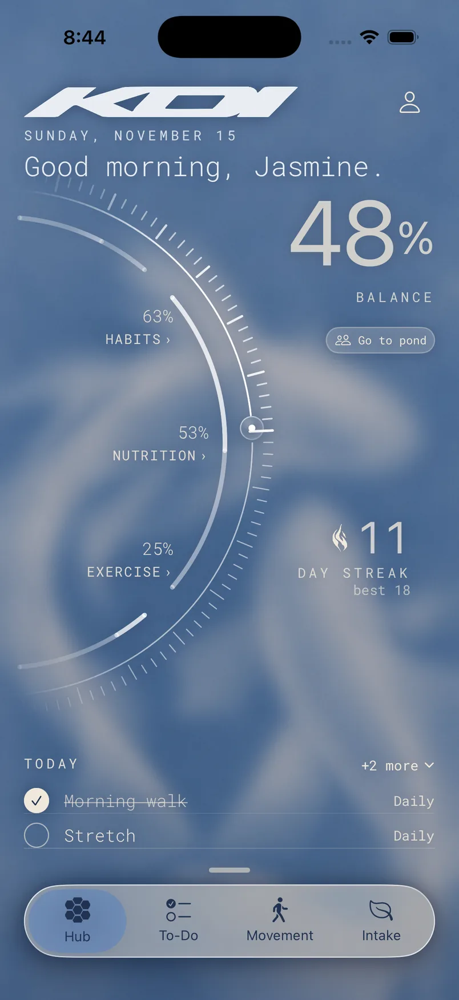

01
Join the beta
Get on the waitlist. Once accepted, this same link becomes your beta download.
Join the beta
Scan to join on iPhone
A calmer way forward
Koi brings your habits, food and workouts into one daily Balance score, and its AI coach plans your next step.
Koi is a native iPhone app written in Swift, so the full app runs on iPhone. Take the tour to see the real app, or play with a simplified web version.

One connected day
A workout can change your protein target. A meal can move your Balance. Koi keeps the next step connected to the whole day.
Built for iPhone. The tour shows the native app; the browser version is a simplified preview.
Real screens from the iPhone app
KOI · DAILY BALANCE
01 / 06
Habits, food and movement come together in one calm view.
Swipe to explore
A browser preview
The web version is a small interactive preview. The full Koi experience is a native iPhone app.